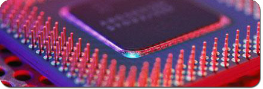

|

Products
These Power supplies
are among the most advanced in the industry and were specially designed for
electrochemical processes. Some areas where they are used: Surface finishing,
Printed Circuit Boards, Electronic packaging, semiconductor, electroforming,
electromachining, MEMS (nanotechnology) and Research). Novak is willing to work
together with customers on
custom designs.
There are three families of products:
General Characteristics
+
Environmentally Sealed Enclosure for harsh industrial environments
+ Fully Adjustable Amps & Voltage settings
+ High Efficiency, Compact , Light-weight Design using Soft Switch mode phase
control.
+ Pulse Power and Pulse Reverse have precision timing controls
+ Friendly User Alphanumeric Interface, Menu Driven Digital Controls
+ Optional Interface for automation PLC, PC Digital or Analog.
+ Efficient Air Cooling
+ Useful features; Amp-Time Totalizer, programmable timers, presets,alarms and
more.
+ Copper Bus Bars for output connection
+ 2-Year-Warranty.
|